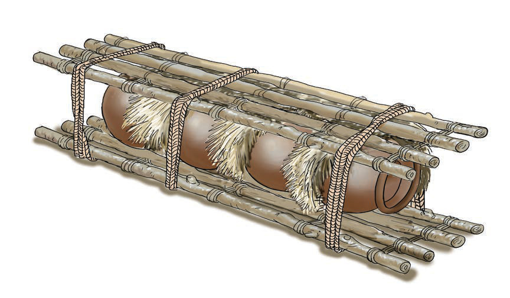

2.
Kuwekwa ndani ya makasha au matenga, na kuzungushia makunzi laini kama majani makavu au takataka za randa. Makunzi laini hukinga vyungu visigongane.
3.
Kuvifunga ndani ya kibebeo cha fito. Ndani ya kibebeo hicho vyungu hutenganishwa na makunzi laini ambayo huzuia mgongano kati ya vyungu. Kielelezo namba 13 kinaonesha namna ya kufunga vyungu katika kibebeo cha fito.

4.
Kuvipanga katika mtindo wa msonge kama inavyooneshwa katika Kielelezo namba 14. Katika upangaji huu, vyungu vikubwa hukaa safu za chini na vidogo hukaa safu za juu. Safu za chini huwa na vyungu vingi kuliko za juu. Nia ya mpangilio huu ni kuepusha vyungu kuserereka na kudondoka. Kadhalika, vyungu vidogo havitaweza kuzidiwa uzito.